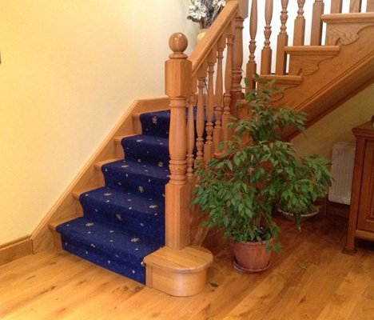

KILKEEL · COUNTY DOWN
Timber, shaped
to your home.
Bespoke staircases, doors, windows and church joinery. Made in a family workshop, with care for the details.

WHAT WE DO
Made to belong.
Bespoke timber joinery
A family workshop.
A personal way of working.
A family joinery business based in Kilkeel, making bespoke timber features for homes and properties across County Down and surrounding areas. The workshop makes staircases, doors, windows, tables and joinery for churches, including pulpits and pews.
Get to know the workshop ↗SELECTED WORK
The grain. The detail. The finish.
GETTING STARTED
A few useful
answers.
What should I include in an enquiry?
Tell the team where you are, what you need and your intended timing. Basic dimensions, drawings or a few photographs can help explain your requirements.
How do I get a quotation?
Speak with the team to agree the scope, practical details and proposed timing. Prices and availability are confirmed directly for your requirements.
Can I discuss an individual design?
Yes. Discuss the dimensions, style and intended use with the workshop.